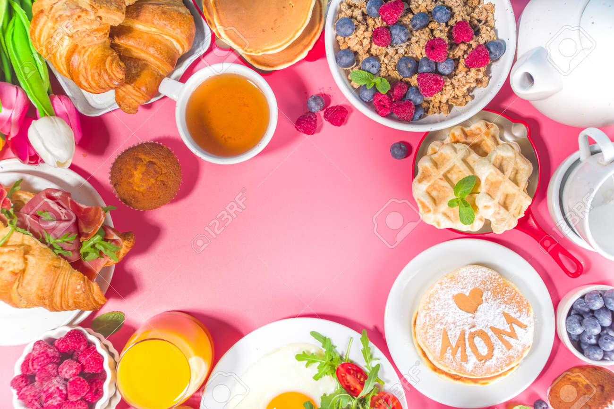

Pan artesanal recién horneado, jamón ahumado, queso suizo, tomate fresco, lechuga crujiente y mayonesa de mostaza con un toque de pesto. ¡La combinación
| Cantidad | Proteínas | Grasasc | Carbohídratos |
|---|---|---|---|
| 1 plato | 20 | 12 g | 4 |
| 2 platos | 40 | 24 g | 8 |
| 4 platos | 80 | 48 g | 16 |
| 6 platos | 120 | 72 g | 24 |